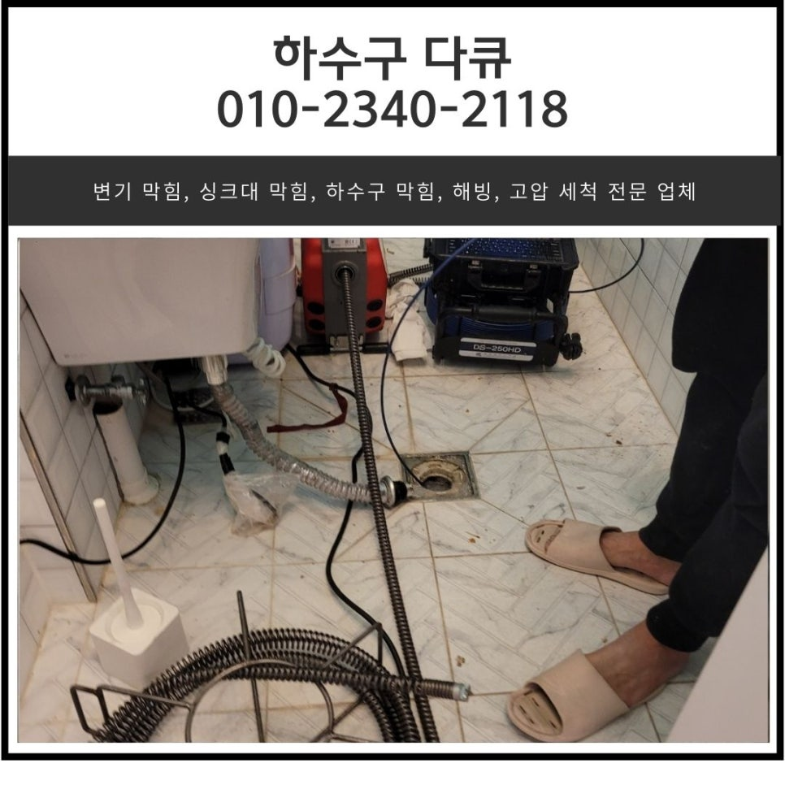
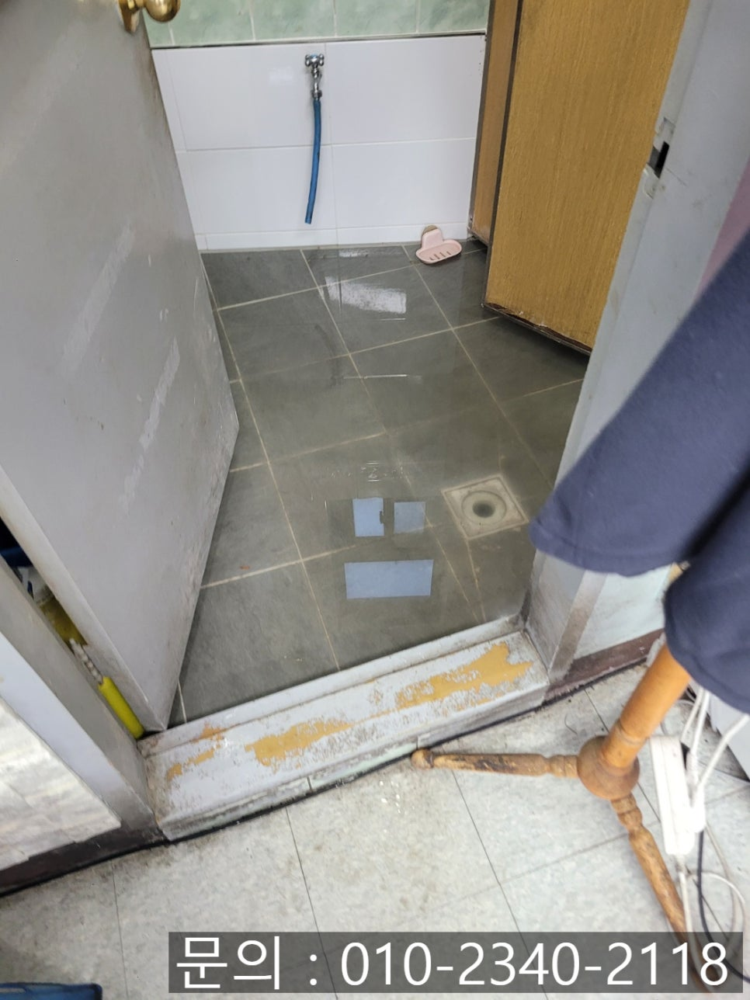
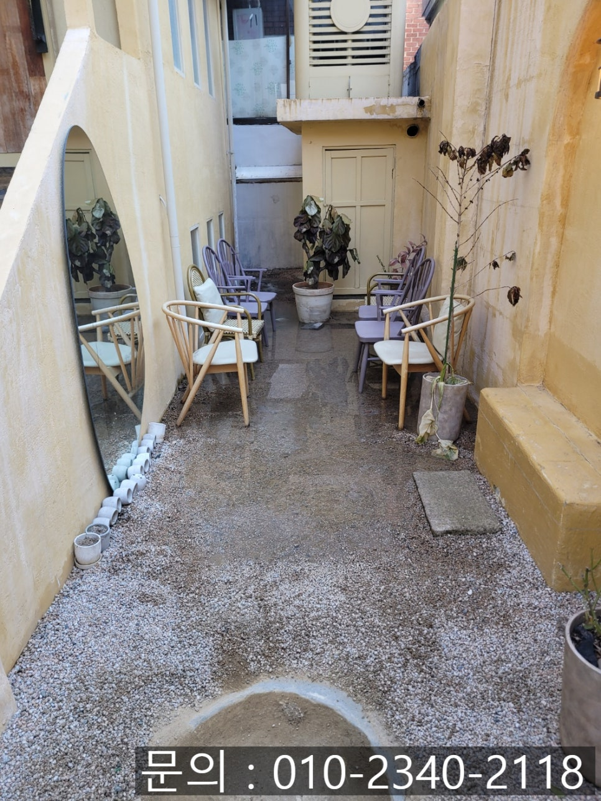
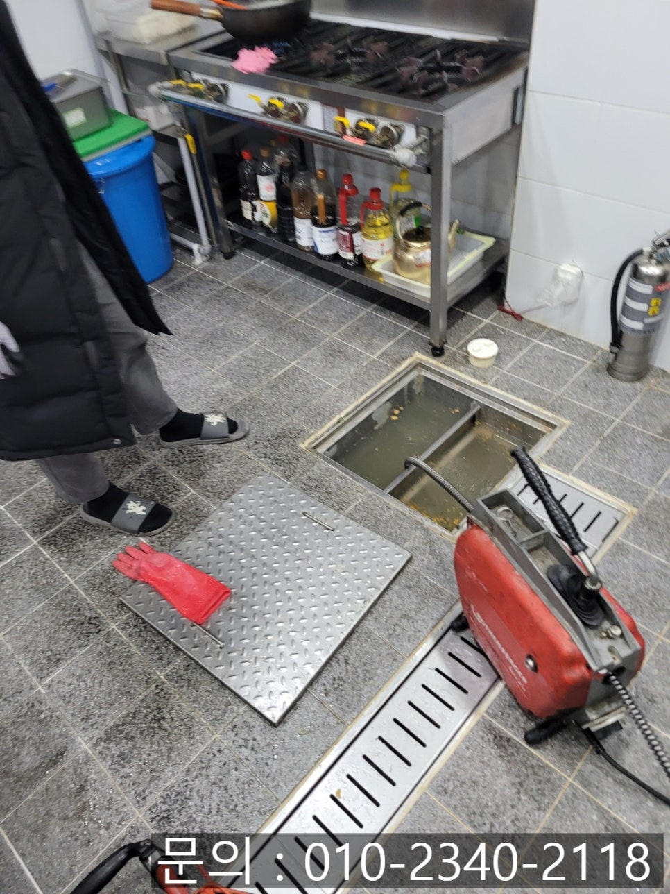
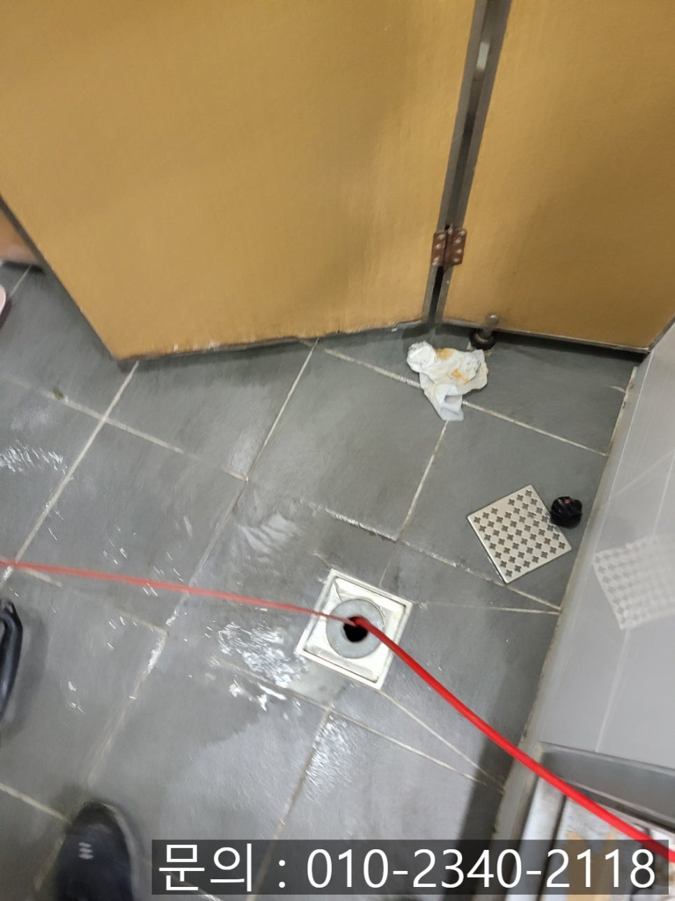
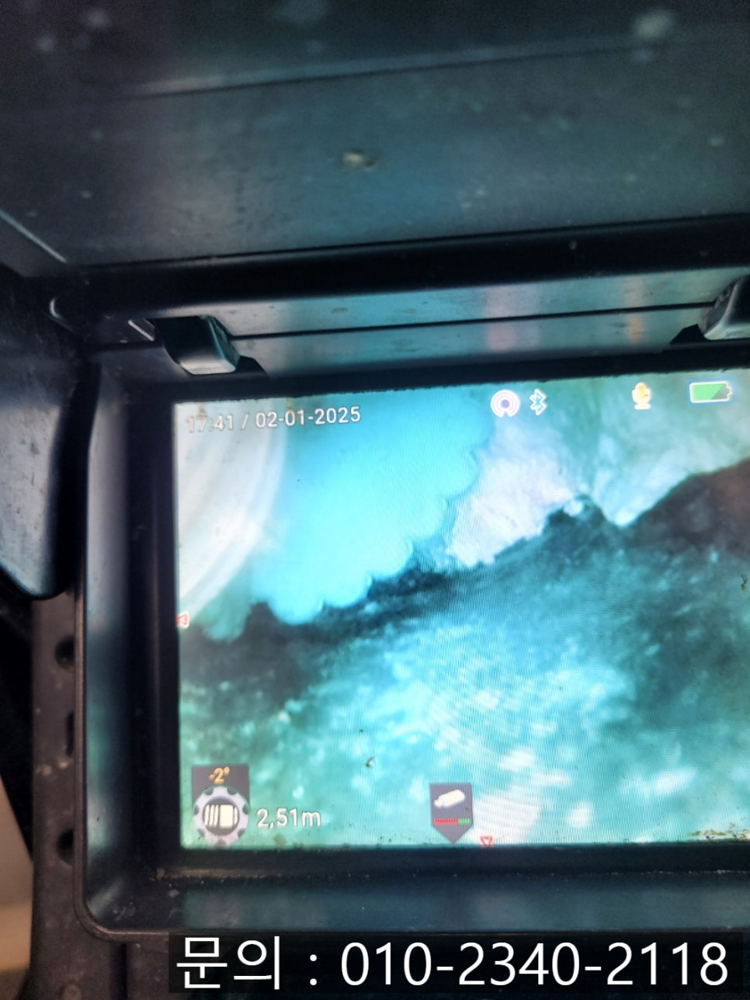
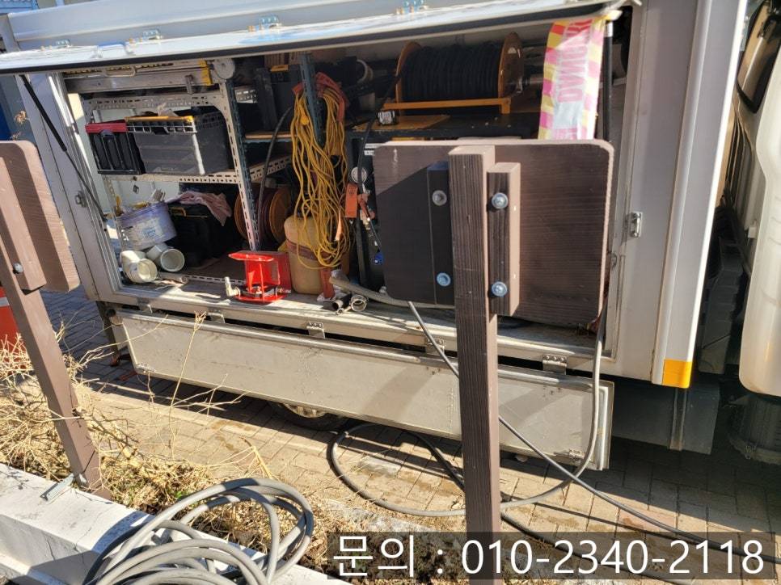

🏠 송산동 하수구 막힘 안녕동 상가 화장실 바닥 역류 고압세척 전문 업체
화성 송산 하수구막힘 전문 시공 후기

📋 작업 개요
- 위치: 화성 송산, 송산, 화성
- 서비스 유형: 하수구막힘, 배관막힘, 역류해결, 배관청소, 고압세척
- 작업 일시: 2025. 3. 15. 18:53
- 업체명: 하수구수사대 (010-5615-2118)
🔍 문제 상황
안녕하세요.
송산동 하수구 막힘, 안녕동 상가 화장실 바닥 역류 고압세척 전문 업체 하수구 다큐입니다.
오늘은 하수구 다큐가 최근에 방문해 하수구 막힘을 해결하고 왔던 현장은 상가 건물에 막힘이 발생했던 현장인데요.
건물주님께서 직접 작업 의뢰를 해주셔서 세입자분들께 피해가 가지 않도록 꼼꼼하게 작업해 드렸던 현장입니다.
사진을 보면서 고객님께 연락받았던 순간부터 마무리까지의 과정을 살펴볼게요.
며칠 전 송산동 하수구 막힘 문제로 연락을 받았습니다.

🔎 원인 분석
💡 전문가 진단: 정밀 진단 장비를 사용하여 슬러지의 고착 여부를 판명하고 타격/세척 작업을 실시했습니다.
상가의 화장실, 매장의 주방 등 여러 곳에서 사용한 물이 빠지지 않고 악취까지 발생하고 있는 상태로 세입자들과 매장의 손님들까지 불편함을 호소하고 있다는 전화였어요.
현장에 도착해 보니 유선상 말씀해 주신 대로 건물 화장실 바닥, 건물 외부에 손님들이 대기하시는 공간, 매장의 주방 바닥 등 건물의 여러 군데에서 역류로 인해 불편함을 겪고 계셨습니다.
특히 손님들이 방문하는 매장에서 송산동 하수구 막힘이 발생하게 되면 영업을 할 수 없다 보니 매출 하락으로 이어져 더 큰 피해가 발생하기 때문에 빠른 해결이 필요해 보였어요.
안녕동 상가 화장실 바닥 역류 고압세척 전문 업체 하수구 다큐는 내시경 카메라를 배관 내부로 진입시켜 화장실 바닥과 주방 바닥 막힘의 원인을 확인해 봤습니다.
내시경 카메라를 진입시켜 확인해 보니 기름 슬러지로 인해 배관이 꽉 막혀있는 상태였어요.
건물 하수구 여러 군데에서 동시다발적으로 문제가 발생한 것으로 보아 건물에서 사용한 물이 모여 흘러나가는 메인 배관에 제일 심각한 문제가 있을 것으로 판단한 하수구 다큐는 메인 배관도 점검을 진행했습니다.

🔧 작업 과정
예상했던 대로 각종 기름 슬러지와 이물질이 뒤엉켜 물의 흐름을 방해하고 있다 보니 건물 이곳저곳에서 문제가 발생한 것 같아요.
고객님께 건물에서 사용하고 있는 배관의 상태에 대해 설명해 드린 다음 고압세척 장비를 이용해 배관 청소를 진행하기로 했습니다.
고압세척 장비는 많은 양의 물을 모아 짧은 시간 동안 높은 압력의 물을 배관으로 쏟아내면서 쌓여있는 이물질을 밀어내는 방식으로 청소해 주는 장비인데요.
상가 건물처럼 넓고 긴 배관에 쌓인 이물질을 깨끗하게 제거하는데 탁월한 장비입니다.
송산동 하수구 막힘 현장의 경우 단순한 막힘이 아니라 배관과 배수로 전체의 세척이 필요한 상황으로 고압세척 장비와 석션기, 샤프트기를 활용하여 반복적으로 작업해서 깔끔하게 해결했습니다.
고객님께 작업을 하면서 건물이 지어진지 얼마나 된 건지 여쭤보니 20년도 넘은 건물이라 배관 청소를 해줘야 하는 건 알고 있었지만 비용 문제로 인해 차일피일 미루다가 문제가 생긴 것 같다고 앞으로는 주기적으로 배관 내부를 점검하고 청소해야겠다고 말씀해 주셨어요.
고객님과 이야기하면서 한참을 작업하자 깨끗해진 배관 내부를 확인할 수 있었습니다.
송산동 하수구 막힘이 발생하면 전문 업체의 도움을 받아 해결하시는 게 가장 현명한 방법인데요.
건물 전체의 위생을 생각해서라도 하수구 막힘이 발생하기 전에 주기적으로 관리하시는 것이 필요합니다.


✅ 작업 완료
지금 하수구 막힘으로 고민하고 계시나요?
다양한 현장 경험과 전문적인 장비를 이용해 정확한 원인을 찾아 해결해 드리고 있는 하수구 다큐와 함께 해결해 보세요!
경기도 화성시 동탄대로 677-10 7층 715-A10호




⚠️ 하수구 배관 막힘 예방 및 관리 가이드
- ✅ 머리카락, 비닐, 물티슈 등 물에 분해되지 않는 이물질은 하수구 유입을 절대 금지해 주세요.
- ✅ 하수구 거름망을 씌우고 모여진 이물질은 주기적으로 쓰레기통에 바로 비워주셔야 합니다.
- ✅ 배관 노후가 심할 경우 이물질이 더 쉽게 걸리므로 주기적인 배관 세척(고압세척 등)을 권장합니다.
- ✅ 작업 후 1년 이내 재발 시 하수구수사대에서 무상 A/S 보증 서비스를 제공합니다.
💡 핵심 정리
- 확실한 장비 작업(내시경 점검 및 샤프트 스케일링)으로 원인을 뿌리 뽑습니다.
- 작업 후 1년 이내에 동일한 부위 재발 시 100% 무상 A/S 서비스를 보장합니다.
- 서울 · 경기 · 인천 전 지역에 24시간 언제든 긴급 출동할 수 있도록 항시 대기 중입니다.
❓ 자주 묻는 질문 (FAQ)
🚨 화성 송산 하수구막힘 문제로 고민이신가요?
정확한 원인 진단과 확실한 시공으로 재발 없는 해결을 약속드립니다.
24시간 긴급 출동 | 서울 · 경기 · 인천 전지역 | 1년 내 재발 시 무상 A/S